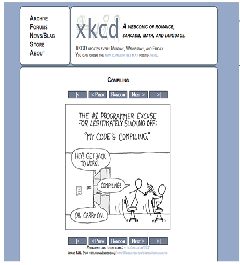
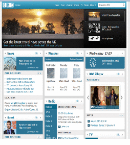
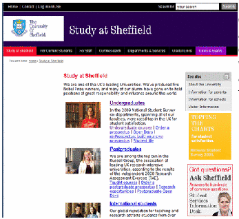
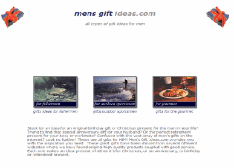
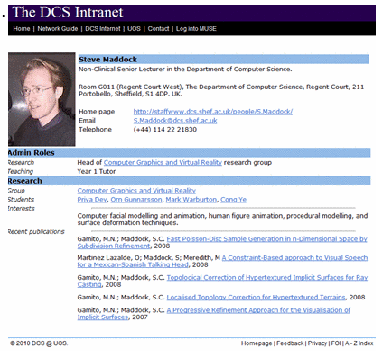
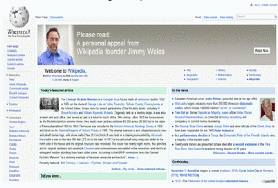
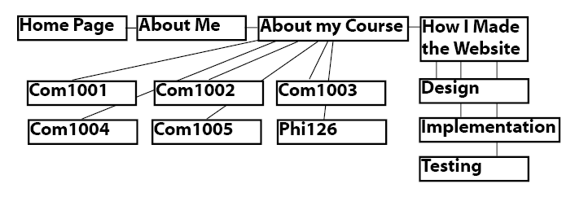
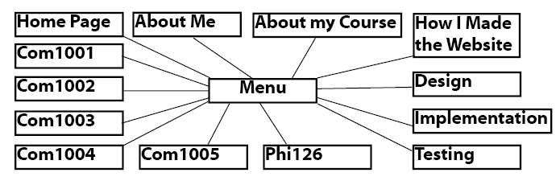
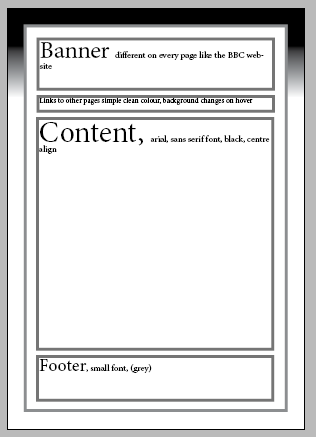
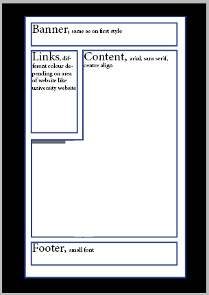

-- To view a PDF of this page please click here (displays better quality images) --
For this design I wanted to make the lines as clean and as simple as possible and keep the colours to a minimum as not to distract from content on the page. The aim for this style was to be as clean and simple for the user to read and use as possible. The general theme of this style sheet is minimalist.
| I took some inspiration for this design from websites like: http://xkcd.com/ | |
|---|---|
|  | Where all of the information on the page has been split up into spate sections with a plain background and simple controls to move through the website |
| I also took inspiration for this design from the BBC website: http://www.bbc.co.uk/ | |
| The BBC website splits all of its contents into sections with a plain background and has a simple navigation bar at the top of the website. This is where I got the idea for creating individual banners for each webpage like the BBC do. |  |
| And some inspiration was taken from: http://www.ebay.co.uk/ | |
 | As eBay lays the page out in clear sections using a modulated layout, this is what I have tried to replicate giving each area a defined position. |
The menu bar just uses a simple square layout and when the mouse hovers over it the colour changes slightly
I also got some inspiration from http://digg.com/
Where the menu bar is horizontal and changes colour when the mouse hovers over it
Design of Second Style Sheet
For this design I wanted to make the colour change depending on what area of the website the user is in. The theme for this style sheet was a more colourful minimalist style sheet.
| I took some inspiration from http://www.sheffield.ac.uk/ | |
|---|---|
|  | On the Sheffield website depending on what area the user is looking at the line at the top changes colour. This is what I want to do in my website when the user changes to a different area of the site a distinct colour should be the theme on that page, this will help users better remember what the different pages are. |
| Another site I took inspiration from was http://www.yahoo.co.uk/ | |
| The inspiration I took from the yahoo site was to have the menu bar to the left of the page and have the content next to it below the banner. |  |
Inspiration of personalised banners
For my website I want to use personalised banners like http://www.bbc.co.uk
 | All of these banners state the name of the area and have the menu bar in the same place as to have a consistent look throughout the website. This is what I want to do with my site and have a consistent layout but a different banner with information about the contents of the page. |
The footer
For the footer I wanted it to match the rest of the web page so I decided to make it like the contents part of the page but with a smaller font and a greyer colour so it would not be as bold
Home page Design
For the home page I wanted to make it so that it gave information about the rest of the website
|  | This is like http://www.mens-gift-ideas.com/ where it just gives details on what the site is about and the links to other areas of the site this is what I want to do with my home page and make it as user friendly and intuitive as possible for the user to navigate. This has been done by creating image hotspots and adding text below them so the user knows where they are going to |
Profile page Design
For the profile page I want to be able to display as much information as possible but still have the information easy to read
|  | This is like http://www.dcs.shef.ac.uk/cgi-bin/makeperson?S.Maddock Where lots of profile information has been given and it is still easily readable. This has been done by using tables with headings to divide the table into sections. |
About my course page Design
For the about my course pages I want to have images alongside the text so the user can have a better understanding of my course
|  | I took some inspiration from http://en.wikipedia.org/wiki/Main_Page As the main page uses images relating to the articles to help the reader better understand what the article is about. |
Html Structure
The structure of the code is mainly based on Div tags as these are the tags that split the page into its parts.
First there needs to be a wrapper that contains all of the content including the banner, content and footer, this should have a white background so it stands out and can be easily read.
Next there needs to be a div tag for the banner so it can be positioned at the top of the page
Then the menu bar/ column
A div tag for the content
And finally for the footer
The div tags should be arranged to look like:

In this format even is the style sheets are turned off the web page will display in the correct way with the banner at the top and the footer at the bottom and the content and menu bar in the middle. All of the pages should be laid out in this way so they are displayed in the same way by the browser and so the user does not get confused with different styles.
Design of pages
There needs to be 4 main pages these pages are:
The home page the home page should give a brief description of the rest of the website and provide links to the other areas of the website
About me page this should be a simple profile on me possibly with a profile image and information of my qualifications and interests.
About my course page I want this section of the website to have more than one page, there should be an individual page per module that I take. This way more information can be provided on each module without all cramming it on one single page.
How I made the website this part of the website should give a detailed description on how I made the website. This should be like the about my course part of the website and contain sub-pages on the design, implementation and testing of the website.
Design of the links in the pages The website should allow different ways of navigating through the system depending on the style sheets used.
For the first sheet the user should only be able to access the sub-pages in the about my course and how I made the website pages in that section of the website. This looks like:

This will be the navigation method in the 1st style sheet where all of the main pages can be accessed on any page but the sub-pages can only be accessed in the area relating to them.
In the second navigation layout all of the pages including sub-pages will be accessible on every page. This looks like:

In this navigation method all of the pages are on the menu so they all can be accessed on every page
Design of URL Structure All of the url's in the website should have a name that actually means something not numbers or random strings of characters. For my url's I will use the page name as the actual url as this will help when creating the links between pages as they will be more memorable.
Design of accessibility options
The website needs to be capable of being used by people with disabilities in accordance with http://www.w3.org/TR/WCAG10/
To cater for people that are colour blind the colours on the web page need to be contrasting so they are not too similar. Also colours such as red and green cannot be together as this will make it very difficult for it to be seen correctly.
The website also needs to cater for people who are blind/ partially sighted the website can be made more accessible if all of the links and images have titles so browsers installed with a text to voice reader will be able to read the page to the user and then the user can select what page they want. For partially sighted people the text needs to be large enough to be easily read and have a colour that is not similar to the background.
For people with movement disabilities the website needs to be able to be controlled by other input devices such as a keyboard, this can helped by the use of access keys on the links in the page.
Another problem that the website might face is people using the site on a mobile device or on a small screen. The website needs to be able to scale and still be usable, this can be done by not setting the page to be too wide and having not having a small menu selection system.
The content on the pages also needs to be readable by a wide audience not being too technical and not so simple that users find it patronising. This also needs to be reflected in the images as the audience is adults they should not be too childish.
The layout of the HTML and content also needs to be considered as the user may have the style sheets turned off, the website needs to be capable of being easily read if the sheets are off.
The images also need to be considered, if the user has turned off possibly to save bandwidth some content is still needed so the web page is still understandable. This can be done by alt tags which allow text to be displayed if the image is not. The images themselves need to be reasonably small in file size so people with slower internet connections can still view them in a reasonable amount of time.
CSS for the first style sheet
The order in which the css should be laid out:
First the body as this is the first thing that the user sees from the HTML
As I want to have different backgrounds for the different style sheets the background image should be located in the body element of the CSS and tilled so a small image can be used to save bandwidth
Next is the wrapper as this is where all of the information that the user sees will be located. There wrapper should be aligned to the middle of the page and have a white background there should be a thick grey border to define where the page starts. The width of the wrapper should also be defined so the text cannot be compressed so much that it cannot be easily like as would happen if it was set as a percentage.
Then the heading which is a blank box for the banners to go in this should be set at a fixed width the same as the wrapper as I do not want the picture to be scaled by the browser. The next item in the css should be the menu bar the menu bar needs to be the same width as the heading with a margin so it is slightly separated from the heading to give it a modulated look. The menu containers should have a border the same as the wrapper and heading. For the first style I want a horizontal menu like on http://www.engadget.com/ to do this the style for the list needs to be set to horizontal and the background of the individual list element needs to be set to a colour. I also want it when the user hovers over the item in the list the background changes colour so the user knows they an select that item. The menu bar should look something like this:

Where the names of the different pages will be inside of the boxes. To make the menu user friendly the whole box should be clickable and not just the text, to do this the "a" tag should have its display set to block.
The content div should come next in the css, the content needs to be easy to read and of a big enough font so people with eyesight problems can still view it. Font size 16px should be big enough. The background can be inherited from the wrapper so it is white. To make the text readable on a white background it should be black. Again the content div should be set so it has the same size border and a margin to separate it from the other divs.
The last part of the css should be the footer. In the footer the text should be set to a smaller size around 10px the colour of the text should also be changed to a greyer colour so it is not confused as part of the content and as all of the other divs the margin and border should be consistent.
This is what the first style should look like

Design of the second style sheet
This is the order that the second style sheet should be laid out:
The first part of the style sheet will be the body for the second style sheet I want to use a small image and tile it possibly from http://www.stripegenerator.com/. This will allow a small image to be repeated saving a lot of bandwidth on a large image.
In the second style sheet the width of the wrapper should be less as there is less modulation compared to the first style. The wrapper should have a white background and a border that changes colour depending on what are of the site the user is looking at.
Next is the banner which will be the same size as the fist sheet so the image does not need to be re-sized. There does not need to be a border on the image which will reduce the width of the container.
Then should come the style for the menu system which is different than the first style as it is vertical. To do this the list can stay vertical and the background if each "li" tag can be set to a colour of that section of the website. Like in the first style This should look something like:

The colours in the menu represent the colour scheme for that part of the website.
The content should come next the font needs to be of at least 16px and be black to contrast with the white background. The content should curve around the menu so the whole screen is used.
Next should be the footer, as it does not have a bodrer there needs to be some kind of seperation this can be done by setting a top border that will act as a horrizontal rule. The font should be smaller than the content arround 14px and should be a different colour.
This is what the second style should look like

The types of data used
For the images in the website I will use Portable Network Graphics (png) which has loss less data compression and does not require a patient licence. PNG is a much better file format for storing images that contain text like the banners will do, as compared to JPEG images. As PNG images do not even if they are compressed and compressed again they do not loose resolution so the images on my site can be used by others if needed.
All of the images need to be created or found and downloaded (non-copyright images only)
The other file format used will be Portable Document Format (PDF) that will be embedded on the how I made the website part of the website. And also linked to incase people do not have the required plugin or if the user wants to view it in full screen.
The only other types of file format used will be HTML and CSS which are used in the creation of the site.